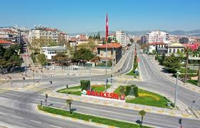

| Anasayfa | Ilceler | Tarihi | Tarihi Yerler | Hakkimizda | Iletisim |
| Anasayfa |
| Ilceler |
| Tarihi |
| Tarihi Yerler |
| Hakkimizda |
| Iletisim |
Balikesir`in Tarihi

Eski çağlarda Balıkesir ve civarında Misya’lılar yaşamaktaydı. Bağımsız bir devlet kuramayan Misyalılar; Truva, Hitit, Frig, Pers (İranlılar), Büyük İskender ve Bergama krallıklarının egemenliği altında yaşamışlardır. Bergama kralının ölümünden sonra M.Ö. 129’da Romalıların eline geçmiştir. Romalılar bölgeyi, vergi ve kölelik sistemleriyle uzun süre sömürmüş ve baskı altında tutmuşlardır. M.S. 395’te Roma İmparatorluğunun Doğu ve Batı diye ikiye ayrılmasından sonra; Başkenti Kostantinopolis (İstanbul) olan Doğu Roma İmparatorluğunda kalan Balıkesir bölgesi için, yeni ve uzun bir dönem başlamış oldu. Askeri ve ekonomik yönden oldukça güçlenen Bizans İmparatorluğu bu bölgedeki hâkimiyetini uzun yıllar sürdürmüştür.
Hz. Muaviye zamanında Müslüman Araplar, fethedileceği Hz. Peygamber tarafından müjdelenen başkent Konstantiniyye’yi almak için sefere çıktılarında bölge ilk defa Müslümanlarla karşılaştı ve MS. 670-678 yılları arasında Arapların idaresinde kalmıştır. İslam ordusu, 678 yılına kadar aralıksız 5 yıl süren kuşatma altında tutmasına rağmen şehri almaya muvaffak olamayınca geri çekilmiştir. Ancak iç savaşlar ve dış saldırılar karşısında iyice zayıflayan Bizans, sonunda derebeylerin eline kalmıştır.
1071’de Alparslan’ın Bizans İmparatoru Romanos Diogenes’e karşı kazandığı Malazgirt savaşıyla Anadolu’nun kapıları Türklere tamamen açılmıştır. Fetihlerle birlikte toplu göçler de devam etti. Böylece Anadolu’da Türk dönemi başlamış oldu. Anadolu’da Selçuklu Devletini kuran Kutalmış oğlu Süleyman, İznik’ten sonra Çanakkale, Adalar Denizi (Ege), Lidya ve İyonya taraflarını da ele geçirdi. 1076’da Misya şehirlerini Bizanslılardan alarak Türk hâkimiyetine kazandırmıştır. Ancak Haçlı seferlerinin neticesinde ve I. Kılıç Arslan’ın da vefatından sonra Selçuklular Batı Anadolu’dan çekilmek zorunda kalmışlardır. Misya şehirlerini tekrar ele geçiren Bizanslılar, buralardaki Türk halkına karşı toplu kıyım harekâtına başladılar.
1206 yılından itibaren Selçukluların uç Beyliklerinden olan Türkmenler Misya kentlerine, özellikle Edremit Körfezi civarına akınlara başladılar. Bizanslıların çoğu buraları Türklere bırakarak bölgeyi boşalttılar. Moğol baskınından kaçan Türk kabileleri de 1260 yıllarında Batı Anadolu ve Marmara Bölgesine gelip yerleştiler ve bölgedeki Hıristiyan nüfus kadar bir çoğunluğa ulaşıp, buraları Türkleştirdiler. Türkmenlerin dışında diğer Türk boylarına mensup pek çok köylü, tüccar ve zanaatkâr da Türkistan’dan gelip bölgeye yerleşti. Bu tarihlerde Selçuklu Devleti iyice zayıflamış ve merkeze uzak bölgelerde kontrolü kaybolmuştu.
Selçuklu devleti zamanında Anadolu’nun batısına yerleşen bazı Oğuz boyları buralarda “Uç Beylikleri” kurdular. Hem Selçuklu sınırını koruyan, hem de Bizans içlerine akınlar düzenleyen bu uç beyliklerinden bir tanesi de; Batı Anadolu’daki Misya’da XIII. yüzyıl sonlarında kurulmuş olan Karesi Beyliğidir. “Karesi” kelimesi, bölgeye beraberinde büyük bir Türkmen grubuyla gelen ve daha önceleri Selçuklu Devletinin önemli bir komutanı olan Karesi Bey (Kara İsa) isminden doğmuştur. Selçuklu Devletinin yıkılmasından bir süre önce diğer uç beyleri gibi Karesi Bey de bağımsızlığını ilan ederek, 1300 yıllarında bölgede Karesi Beyliğini kurdu. Kendi ismiyle anılan Beyliğinin sınırlarını, Bizanslıların zayıflığından ve beraberinde bulunan Sarı Saltuk’un adamlarından faydalanarak daha da genişletmiştir. Karesi Beyliği, merkez yaptığı Balıkesir’den başka; Bergama, İvrindi, Ayazmend (Altınova), Edremit, Kemer Edremit (Burhaniye), Bayramiç, Ayvacık, Ezine, Fırt (Susurluk), Bigadiç ve Sındırgı yerleşim yerlerine sahipti. Bu yıllarda Karesi Beyliği, deniz gücü bakımında komşusu bulunan Osmanlı Beyliği hükümetinden daha güçlü durumdaydı. Karesi Bey’den sonra yerine geçen Aclan Bey zamanında, Osmanlı Beyliği ile çok iyi münasebetler kurulmuştu.. Hatta oğul Dursun Bey Bursa’da Orhan Gazi’nin yanında bulunuyordu. Aclan Bey’den sonra başa geçen en büyük oğlu Demirhan Bey ise halkına karşı zulüm derecesinde kötü davranmaktaydı. Bu durumdan şikâyetçi olan halk ve beyliğin ileri gelenleri; Bursa’daki Dursun Bey’i davet ettiler.
1345 yılında Orhan Gazi ile birlikte gelen Dursun Bey, Bergama kalesine sığınan ağabeyi Demirhan Bey tarafından öldürüldü. Bu duruma çok üzülen Orhan Gazi, halkın ve ileri gelenlerin de isteği üzerine Karesi Beyliği topraklarını Osmanlı’ya kattı.
Henüz kuruluş döneminde bulunan Osmanlı Devleti, Karesi Beyliği’nin katılımıyla oldukça güçlendi. Ayrıca Karesi’nin ileri gelen kumandanlarından Evrenos Bey, Hacı İlbey, Ece Halil ve Gazi Fazıl Beylerle büyük bir askeri destek kazanmıştır. Nitekim bu beyler, Osmanlı askerî akınlarının başarılı olmasında önemli rol oynamışlardır. Özellikle Karesi Beyliğinden intikal eden güçlü donanma ile Osmanlı ordusu, Rumeli taraflarına kesin zaferlerle sonuçlanan seferler yaptı. Böylece Osmanlılar; kendi rızalarıyla bu beyliğe iltihak eden halkla büyük bir Türk kitlesi, değerli komutanlarla da askeri güç ve iyi bir donanma kazanmış oldu.
Orhan Gazi Karesi’yi, merkeze bağlı bir sancak haline getirip, adını da değiştirmeden Karesi Sancağı yaptı. Sancağın merkezi olan Balıkesiri’ye, oğlu Şehzade Süleyman’ı sancak beyi olarak tayin etti. Böylece Karesi, aynı zamanda bir Şehzade Sancağı olmuştur.
Yıldırım Beyazid’in 1402’de Timur’a Ankara’da yenilmesinden sonra Balıkesir ve civarı da Timur ordusunun yağmasına maruz kalmıştır. Duraklayan Osmanlı Devleti topraklarında beylikler kurulmaya ve kardeşler de aralarında taht kavgalarına başlamıştır. Bu durum Timur’un Anadolu’dan çekilmesine ve Çelebi Mehmed’in Osmanlı Devleti’ni tekrar toparlamasına kadar sürmüştür. Tekrar eski dirlik ve düzenine kavuşan ülke; ilerleme ve yükselme dönemlerinde zaman zaman meydana gelen kıtlık (1502), çekirge salgını, (1525), medrese talebeleri (suhte) isyanı (1572) ve diğer isyanlar gibi bir takım olumsuz olaylara sahne olmuş, Balıkesir ve civarı da bu hadiselerden etkilenmiştir.
XVII yy. sonlarında meydana gelen göç hareketlerinde Balıkesir yöresine çok sayıda Yörük, Türkmen ve Çepni gibi muhtelif Türk boyları gelip yerleşmiştir. İleriki yıllarda da devam eden göç problemini kökünden halletmek isteyen devlet, XIX. yy.da planlı bir iskân politikası takip ederek göçebe halde yaşayan pek çok aşiret ve topluluğu uygun yerlere yerleştirerek onların yerleşik düzene geçmelerini sağlamış oldu.
Osmanlı Devleti idaresi altındaki Karesi; devletin kuruluş ve yükseliş dönemlerinin sevinç ve refahını yaşamış; duraklama ve gerileme dönemlerinin de üzüntü ve sıkıntılarına ortak olmuştur. Böylece gerek ülke genelinde ve gerekse bölgede yaşanan ekonomik, siyasî, askerî, idarî pek çok olaylar neticesinde, Osmanlı Devleti’nin son dönemleri sayılabilecek 1800’lü yılların sonlarına gelinmişti.
Osmanlı Devleti’nin aldığı dış borçları ödeyemeyerek mali iflas yaşaması sonucu alacaklarının tehlikeye düşmesinden korkan Avrupa Devletleri, 1880’de Duyûn-ı Umûmiye (Genel borçlar) idaresini kurdurdular. Duyûn-i Umûmiye şubeleri ile devlet gelirlerinin bir kısmını doğrudan topladılar. Memleketin her yerinde olduğu gibi, Balıkesir, Ayvalık ve Bandırma gibi bölgenin yüksek gelirli yerlerinde de yıllarca faaliyet göstermişlerdir.
Balıkesir, Osmanlı Devletinin “93 harbi” diye anılan 1877-1878 yılındaki Osmanlı-Rus Savaşı ve 1912-1913 yıllarında Balkan Harbi’nde yenilmesi sonucu Balkanlardan çok sayıda göç almıştır. Rus ve Bulgarların katliamından kaçabilen pek çok insan Balıkesir ve civarına gelmiş ve yerleşmişlerdir. Ayrıca Rusların eline geçen Kafkasya toprakları ve özellikle Kırım’dan da kitleler halinde gelen insanlar bölgenin muhtelif yerlerinde iskân edilmişlerdir.
1914-1918 yılları arasında cereyan eden I. Dünya Harbine giren Osmanlı Devleti askerlerinin çarpıştığı pek çok cepheden bir tanesi de, bölgedeki Çanakkale Savaşıdır. Bu savaş, ülkenin her tarafında olduğu gibi Balıkesir’i de menfi olarak etkilemiştir. I. Dünya Savaşından yenik çıkan ve oldukça zayıf düşen Türklerin bu durumunu fırsat bilen Yunanlılar, gözlerini Batı Anadolu topraklarına diktiler. Yunanistan’ın buraları işgal etmesini diğer Avrupa devletleri de desteklediler. İtilâf devletlerinin tehditleri altında bulunan ve yeterli askeri, silahı olmayan, devletin de aciz kaldığını gören Türk halkı, müdafaa cemiyetleri kurmaya başladılar. 15 Mayıs 1919’da İzmir’e giren Yunanlar işgallerini Anadolu’nun içlerine doğru yaymaya başladılar. Balıkesir bölgesinde ilk defa 29 Mayıs’ta Ayvalık işgal edildi. Yunanlara karşı ilk silahlı mücadele Ayvalık’ta gerçekleşti. Bu arada Balıkesir’de 18 Mayıs’ta Vehbi (Bolak) Bey’in başkanlığında “Redd-i İlhak” heyeti oluşturuldu. Alaca Mescid’de oluşturulan 41 kişilik bu heyet hemen faaliyetlere başladı. 26-31 Temmuz 1919 ve 16-22 Eylül 1919 tarihlerinde yapılan I. ve II. Balıkesir Kongreleri neticesinde her bölgede Kuva-yi Milliye teşkilatları kuruldu.
Milli Mücadele için İstanbul’dan Balıkesir’e gelen yüzbaşı Kemal hemen askeri birlikler oluşturmaya başladı. Bu birlikler işgali önlemek için yer yer Yunanlarla çarpışmaktaydı. Soma ve Akhisar cephesi bunların en önemlisiydi. Fakat yeterli asker ve silahı bulunmayan Milli kuvvetler; hem sayıca çok hem de teçhizat olarak güçlü Yunan karşısında ancak bir yıl dayanabildiler.
Soma-Akhisar cephesinin dağılmasıyla, 22 Haziran 1920’den itibaren Yunan işgali içerilere doğru yayılmaya başladı. Halka da çok eziyet eden Yunanların en büyük yardımcıları, daha önceden buralarda yaşayan yerli Rumlardı. Yıllarca beraber yaşayan bu insanlar, şartlar değişince daha önceden kendilerinden hiç bir kötülük görmedikleri Türklere ihanet etmekteydiler. Kazaları işgal eden Yunanları, Kuva-yi Milliye güçleri hiç bir zaman rahat bırakmamış, direniş ve baskınlarla onları yıldırmışlardı. Bu arada Anadolu’da Türk halkını Yunanlara karşı direnmeye çağıran ve düzenli bir ordu kurmaya çalışan Mustafa Kemal’e Balıkesirliler destek vermişler ve işbirliği içerisinde olmuşlardır. Türk Milli Mücadelesi açısından bu şehrin çok ayrı ve özel bir yeri bulunmaktadır. Sakarya zaferiyle Anadolu topraklarının sahibi olduğunu bir defa daha ispatlayan Türkler, 9 Eylül 1922 de İzmir’de Yunanların denize dökülmesiyle Kurtuluş Savaşından başarıyla çıkabilmiştir. Eylül ayının ilk haftasındaki 3-4 gün içinde bütün Balıkesir ve kazaları kurtulmuştur. Bu arada Osmanlı Devleti de yerini Türkiye Cumhuriyeti Devletine bırakarak tarih sahnesinden çekilmiştir.
|
|
||||
| POWERED BY SAIM OZTURK | ||||